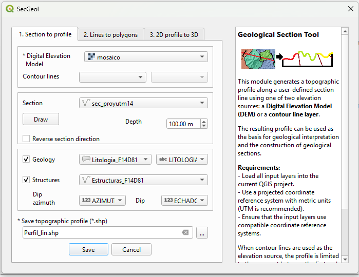
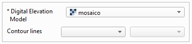
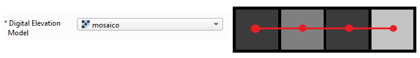
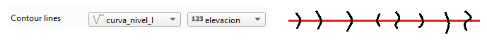
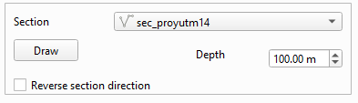
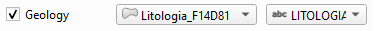
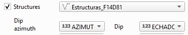

Phase 1. Tool overview

Elevation source selection

The elevation source is one of the main elements of this phase, as it provides the elevation (Z) values used to construct the topographic profile. Its coordinate reference system is also used as the reference for the outputs generated by SecGeol.
SecGeol supports two types of elevation sources:
Digital Elevation Model (DEM)
This is a raster layer in which each pixel contains an elevation value. The DEM must cover the area crossed by the section line.
The pixel size determines the spacing used to sample the topographic profile. Therefore, a DEM with a smaller pixel size can represent terrain variations in greater detail.

Contour lines
These correspond to a vector line layer in which the field containing the elevation value must be selected. SecGeol obtains the profile points from the intersections between the section line and the contour lines.
In this case, the profile is constructed between the first and last intersections with the contour lines. Therefore, the resulting profile extent may be shorter than the total length of the section line.

Section line
The section line defines the path along which the topographic profile will be constructed. SecGeol allows it to be defined in two ways: by using an existing line from a vector layer or by drawing it directly on the map view.
The following conditions should be considered for each option.

Line from a vector layer
When an existing line from a vector layer is used, the following conditions should be considered:
- The section line must be completely contained within the elevation source. Otherwise, SecGeol will not be able to continue constructing the topographic profile.
- The section must be defined by a single feature. If the layer contains multiple lines, SecGeol allows you to select the one that will be used to generate the profile.
- If the section line has no defined coordinate reference system and lies over the elevation source, SecGeol will assign the coordinate reference system of that source to it.
- The line may contain more than two vertices and may therefore change direction along its path.
- The line geometry cannot be multipart. A multipart geometry contains two or more separate paths that belong to the same feature.
User-drawn line
When the section line is drawn directly in SecGeol, the following conditions should be considered:
- Drawing mode is activated using the Draw button. With the elevation source already loaded, click on the map view to define the section vertices and finish drawing with a right-click.
- The line will use the coordinate reference system of the selected elevation source.
- The line may contain more than two vertices and can therefore change direction along its path.
Section depth
The default depth is 100 m and can be modified according to the requirements of the section. Enter only the depth magnitude, without a negative sign.
The depth is calculated from the minimum elevation found along the profile and extends downward from that value.
Geology
Optionally, a geology layer can be included to provide reference information during profile interpretation. This information must correspond to a vector layer with polygon geometry.

SecGeol identifies the geological polygons that intersect the section line and transfers this information to the topographic profile. When selecting the geology layer, specify the attribute field containing the information to be represented in the profile, for example, the lithological unit.
In this way, the distribution of geological units observed at the surface provides a reference to support the geological interpretation of the subsurface.
Structures
Optionally, a vector line layer representing geological structures, such as faults or fractures, can also be included. Structures that intersect the section line can be projected onto the profile to support the geological interpretation at depth.

To perform this projection, the attribute table of the structural layer must contain two fields with orientation information:
- Dip azimuth: indicates the direction toward which the structure dips and must be within the range from 0° to 360°.
- Dip: indicates the inclination angle of the structure and must be greater than 0° and less than or equal to 90°.
Output profile
SecGeol generates a topographic profile that provides the basis for geological interpretation. This profile represents elevation on the Y-axis and the distance traveled along the section line on the X-axis. Therefore, its X/Y coordinates correspond to the local profile coordinate system and do not represent the geographic location of the section in plan view.
The following recommendations should be considered when performing the interpretation:
- The profile preserves the surface elevations (Z) on the Y-axis and the actual distances traveled along the section line on the X-axis.
- The geometry of the topographic profile must not be modified. The vertices representing the terrain must not be moved, deleted, or edited, as they provide the geometric reference for the section. This restriction applies only to the topographic profile; the lines used for geological interpretation and the projected structures can be edited.
- The topographic profile line retains, as an attribute, the geological information obtained from the polygons that intersected the section line. It is recommended to symbolize the profile using this field, as this makes it possible to visualize the distribution of geological units observed at the surface and use them as a reference during interpretation.
- The profile also contains the geological structures projected according to their dip azimuth and dip values. These lines can remain in the position generated by SecGeol or be modified during interpretation, according to the user's criteria.
- Lines can be added and edited on the profile to perform the geological interpretation. The process can be understood as sketching the subsurface geometry on the profile using line features.
- When constructing the interpretation, extend the lines slightly beyond their intersections with other lines. It is not necessary to remove the small excess segments, as these will be resolved during polygon generation in the next phase.
- Once the interpretation has been completed and the intersections between the lines have been reviewed, continue with Phase 2. Lines to polygons.